昔之学者曰：“太阳而外，宇宙间殆无所有。”历纪以来，翕然从之；怀疑之徒，竟不可得。乃不谓忽有一不可思议之原质[46]，自发光热，煌煌焉出现于世界，辉新世纪之曙光，破旧学者之迷梦。若能力保存说[47]，若原子说，若物质不灭说，皆蒙极酷之袭击，跄踉倾欹，不可终日。由是而思想界大革命之风潮，得日益磅薄，未可知也！此新原质以何因缘，乃得发见？则不能不曰：“X线（旧译透物电光）之赐。”
X线者，一八九五年顷，德人林达根[48]所发明者也。其性质之奇异：若（一）贯通不透明体，（二）感写真干板[49]，（三）与气体以导电性等。大惹学者之注意，谓X线外，当更有Y线，若Z线等者。相率覃思，冀获新质。乃果也驰运涅伏，必获报酬。翌年而法人勃克雷[50]复有一大发见。
或曰，勃氏以厚黑纸二重，包写真干板，暴之日光，越一二日，略无感应，乃上置磷光体铀盐[51]，欲再行实验，而天适晦，不得已姑纳机兜[52]中，数日后检之，则不待日光，已感干板。勃氏大骇异，细测其理，知其力非借磷光，而铀之盐类，实自具一种类似X线之辐射线，爰名之曰铀线，生此种线之体曰剌伽刻佉夫体[53]。此种物体所放射之线，则例以发见者之名名之曰勃克雷线。犹X线之亦名林达根线也。然铀线则无待器械电气之助，而自能放射，故较X线已大进步。
尔后研究益盛，学者涅伏中，均结种种Y线Z线之影。至一八九八年，休密德[54]氏于钍之化合物中，亦发见林达根线。
同时，法国巴黎工艺化学学校教授古篱夫人[55]，于授业时，为空气传导之装置，偶于别及不兰[56]（奥大利产之复杂矿物）中，见有类似X线之放射线，闪闪然光甚烈。亟告其夫古篱，研究之末，知含有铋化合物，其放射性凡四千倍于铀盐。以夫人生于坡兰德[57]故，即以坡罗尼恩[58]名之。既发表于世，学者大感谢，法国学士会院复酬以四千法郎，古篱夫妇益奋励，日事研究，遂于别及不兰中，又得一新原质曰
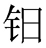
[59]（Radium），符号为Ra。（按旧译Germanium[60]曰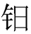
。然其音义于Radium尤惬，故篡取之，而Germanium则别立新名可耳。）一八九九年，独比伦[61]氏亦于别及不兰中得他种剌伽刻佉夫体，名曰爱客地恩[62]。然其辐射性不及
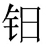
。坡罗尼恩与铋，爱客地恩与钍，
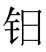
与钡，均有相似之性质。而其纯质，皆不可得。惟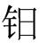
则经古篱夫人辛苦经营，始得略纯粹者少许，测定分剂及光图[63]，已确认为一新原质，其他则尚在疑似之间，或谓仅得保存其能力而已。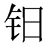
盐类之水溶液，加以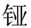
，或轻二硫，或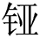
二硫[64]，不生沉淀。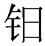
硫养四或炭养三[65]，不溶解于水，其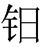
绿二[66]，则易溶于水，而不溶解于强盐酸及酒精中。利用此性，可于制铀之别及不兰残滓中，分析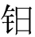
质。然因性殊类钡，故钡恒羼杂其间，去钡之法，须先令成盐化物，溶于水中，再注酒精，即生沉淀，然终不免有钡少许，存留溶液内，反复至再，始得略纯之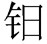
盐。至于纯质，则迄今未能得也。且其量极稀，制铀残滓五千吨，所得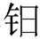
盐不及一启罗格兰[67]，此三年间所取纯与不纯者合计仅五百格兰[68]耳。而有谓世界中全量恐已尽是者，其珍贵如此。故值亦綦昂，虽含钡甚多者，每一格兰，非三十五弗[69]不能得。至古篱氏之最纯品，以世界惟一称者，亦仅如微尘大，积二万购之，犹不可得，其放射力则强于铀盐百万倍云。此最纯品，即
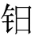
绿二也。昨年古篱夫人化分其绿，令成银绿二[70]，计其量，然后算得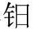
之分剂为二百二十五。多漠尔
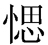
[71]氏曾照以分光器，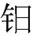
之特有光图外，不复有他光图，亦为新原质之一证。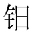
线虽多与X线同，而此外复有与玻璃陶器以褐色或革色，令银绿二复原，岩盐带色，染白纸，一昼夜间变黄磷为赤磷，及灭亡种子发芽力之种种性。又以色儿路多[72]皿贮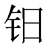
盐（放射性强于铀线五千倍者），握掌中二时间，则皮肤被灼，今古篱氏伤痕历历犹未灭也。古篱氏曰：“若有人入置纯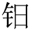
一密里格兰[73]之室中，则当丧明焚身，甚或致死。”而加奈大之卢索夫[74]氏，则谓纯一格兰，足起一磅之重高及一呎。甚或有谓足击英国所有军舰，飞上英国第一高山辩那维[75]之巅者，则维廉可洛克[76]之言也。综观诸说，虽觉近夸，而放射力之强，亦可想见矣。尤奇者，其放射力，毫不假于外物，而自发于微小之本体中，与太阳无异。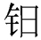
线亦若X线然，有贯通金属力，此外若纸木皮肉等，俱无所沮。然放射后，每为被贯通之物质所吸收，而力变弱，设以线通过○○○二五密里[77]之铂箔，则强率变为其初之四十九%，再一次则又减为三十六%，二次以后，减率乃不如初之著矣。由是知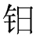
线决非单纯，有易被他物所吸收者，有强于贯通力者，其贯物而过也若滤分然。各放射线，析为数种，感写真干板之力强者，即贯通线也，其中复有善感眼之组织者，故虽瞑目不视，而仍见其所在。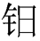
之奇性，犹不止是。有拔尔敦者，曾于暗室中，解包出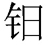
，忽闪闪然发青白色光，室中骤明，其纸裹亦受微光，良久不灭。是即副放射线[78]，感写真干板之作用，亦与主放射同。盖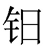
能本体发光，及与光于接近物体之二性质，宛如太阳与光于周围游星然。其能力之根源，竟不可测。或曰勃克雷氏贮比较的纯
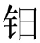
于管中，藏之衣底，六小时后，体上忽现焦灼痕，未几忽隐现于头腕间，不能指其定处。后古篱氏乃设法测其热度，法用热电柱[79]，其一方接合点，置纯铜盐，他方接合点，置含铜盐六分一之锡盐。计算所生电流之强率，知置铜盐处之温度，高一度半。又以篷然测热器[80]，测定○·○八格兰之纯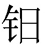
盐所生温度，一小时凡十四加罗厘[81]；即一格兰所放射之热，每一小时凡百加罗厘以上也。其光与热，既非出于燃烧，亦无化学的变化，不知此多量能力，以何为根？如曰本体所自发欤，则昔所谓能力之原则者，不得不破。如曰由外围能力而发欤，则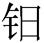
必当有利用外围能力之性，而此能力之本性，又为吾人所未及知者也。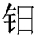
线亦有与空气以导电性之性质，设有钢板及锌板各一，联以铜丝，两板间之空气，令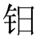
线通过之，则铜丝即生电流，与两板各浸于稀硫酸液中无稍异。盖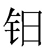
线能令气体为衣盎（集于两极间之电解质之总名），分出荷阴阳电气之部分，故气体之作用，遂与液体电解质同。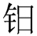
线中之易被他物吸收者，此性尤著。从克尔格司管阴极发生之恺多图线[82]，及林达根线，及
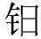
线，若受强磁力之作用，则进行必偏，设与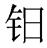
线成直角之方向，有磁力作用，则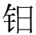
线即越与磁力相对之左而行；然因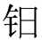
线非单纯者，故析出屈于磁力及不屈于磁力之种种线，进路各不相同，与日光过三棱玻璃而成七色无异。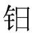
线中之强于贯通力者，此性尤著，且因对于磁力之作用，故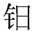
线之大部分，遂含有荷阴电气而飞运极迅之微粒云。被磁力而偏之
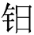
线中，既含有荷阴电之微粒，则以之投射于或物体，亦当得阴电。古篱夫妇曾用封蜡绝缘之导电体，投以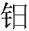
线，而确得阴电；又以同法绝缘之铜盐，因带阴电之微粒飞去，而荷阳电。此电气之集积量，每一平方密厘每一秒时凡得4×19-12安培云。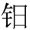
线中带阴电之微粒，在强电场时，必偏其进行方向，即在一密厘有一万波的[83]之强电场，则偏四生的[84]许，此勃克雷氏所实证者也。自
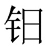
所发射微粒之速度，每秒凡1.6×1010密厘，约当光速度之半，因此微粒之飞散，故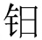
于一小时所失之能力额凡4.4×10-6加罗厘，与前记之放出热量较，则觉甚微。又从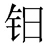
之表面一平方密厘所放射之微粒，其质量亦綦少，计每一格兰之飞散，约需十亿万年。准此，则其微粒之大，应为轻气原子三千分之一，是名电子。电子说曰，“凡物质中，皆含原子，而原子中，复含电子，电子之于原子，犹原子之于物质也。此电子受四围之电气与磁气之感化，循环飞运，无有已时，凡诸物体，罔不如是，虽吾人类，亦由是成。然飞运迟速，则因物而异，
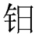
之电子，乃极速者，以过速故，有一部分，飞出体外，而光与热，自然发生，为辐射线。”然是说也，必电子自具物质构成之能，乃得秩然成理。不然，则纵调和之曰飞散极微，悠久之曰须无量载，而于物质不灭之说，则仍无救也。且创原子说者，非以是为至微极小，分割物质之达于究极者乎。电子说兴，知飞动之微点，实小于原子千分之一，乃不得不褫原子宇宙间小达极点之嘉名，以归电子，而原子说亡。自X线之研究，而得
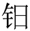
线；由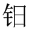
线之研究，而生电子说。由是而关于物质之观念，倏一震动，生大变象。最人涅伏[85]，吐故纳新，败果既落，新葩欲吐，虽曰古篱夫人之伟功，而终当脱冠以谢十九世末之X线发见者林达根氏。注 释
[45] 本篇最初发表于1903年10月10日《浙江潮》月刊第八期，署名自树。 ，即化学元素镭。
，即化学元素镭。
[46] 原质 即元素。
[47] 能力保存说 即能量守恒原理。
[48] 林达根 （W.C.Röntgen，1845—1923） 通译伦琴，德国物理学家。1895年，他在研究真空放电管时发现X射线（又称伦琴射线），1901年获诺贝尔物理学奖。
[49] 写真干板 用玻璃板制作的照相底片。
[50] 勃克雷 （A.H.Becquerel，1852—1908） 通译贝可勒尔，法国物理学家。1895年起研究磷光现象，次年发现铀射线，是科学实验中认识放射性的开端。1903年和居里夫妇同获诺贝尔物理学奖。
[51] 磷光体铀盐 即放射燐光的铀盐。磷同燐。磷光体，放射燐光的物质。
[52] 机兜 抽屉。
[53] 剌伽刻佉夫体 （Radioactive Substance） 即放射性物质。
[54] 休密德 （E.Schmidt，1845—1921） 通译施米特，德国物理学家。发现放射性元素钍。
[55] 古篱夫人 （Mme Curie，1867—1934） 通译居里夫人，物理学家、化学家。原名Marie Sktodowska，波兰华沙人，1895年与法国物理学家居里（P.Curie，1859—1906）结婚，共同研究放射性物质，先后发现新元素钋和镭。1903年获诺贝尔物理学奖，1911年又获诺贝尔化学奖。
[56] 别及不兰 Pitchblende的音译，即沥青铀矿。居里夫妇曾从中提炼出微量的放射性元素钋和镭。
[57] 坡兰德 （Poland） 通译波兰。
[58] 坡罗尼恩 Polonium的音译，即钋，它的放射性较铀强四百倍。居里夫人将它命名为坡罗尼恩，是为纪念她的祖国波兰；居里于1898年7月18日在法国科学院理科博士学院报告新元素的发现时曾说：“假使这新元素的存在将来能够证实的话，我们想叫它钋，来纪念我俩中一人的祖国波兰。”
[59] 按居里夫人于1907年始从几十吨的沥青铀矿中提得半克左右的纯粹氯化镭，测定镭的原子量为226。到1910年获得纯镭。
[60] Germanium 现在译为锗。
[61] 独比伦 （A.L.Debierne，1874—1949） 通译德比尔纳，法国化学家。1899年他在沥青铀矿中发现放射性元素锕，次年参加居里夫妇提炼纯镭的工作。
[62] 爱客地恩 Actinium的音译，即锕。
[63] 分剂及光图 原子量和原子发射光谱线图。
[64] 轻二硫 即硫化氢（H2S）。二硫，即硫化铵（〔NH4〕2S）。
[65]
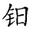
硫养四 即硫酸镭（RaSO4）。 炭养三，即碳酸镭（RaCO3）。
炭养三，即碳酸镭（RaCO3）。
[66]  绿二 即氯化镭（RaCl2）。
绿二 即氯化镭（RaCl2）。
[67] 启罗格兰 Kilogram的音译，即公斤。
[68] 格兰 Gram的音译，即克。
[69] 弗 Franc音译的简称，即法郎，法国货币单位。
[70] 银绿二 即二氯化银（AgCl2）。
[71] 多漠尔 （E.A.Demarcay，1852—1904） 法国化学家。他于1901年发现化学元素铕，曾为居里夫妇发现的元素镭提出光谱学的证明。
（E.A.Demarcay，1852—1904） 法国化学家。他于1901年发现化学元素铕，曾为居里夫妇发现的元素镭提出光谱学的证明。
[72] 色儿路多 （Celluloid） 即赛璐珞，由硝酸纤维素和樟脑制成的一种易燃性塑料。
[73] 密里格兰 Milligram的音译，即毫克。
[74] 卢索夫 （E.Rutherford，1871—1937） 通译卢瑟福，英国物理学家、化学家。原籍新西兰。他在研究原子结构和放射性现象方面有重要成就。1908年获诺贝尔化学奖。
[75] 辩那维 （Pennires） 通译奔宁山脉，在英国北部。
[76] 维廉可洛克 （W.Crookes，1832—1919） 通译威廉·克鲁克斯。英国物理学家、化学家。他在研究真空管内放电现象方面有重要成就。
[77] 密里 Millimeter的音译，即毫米。
[78] 副放射线 即次级射线。
[79] 热电柱 即温差电偶，一种探测和度量温度的器件。
[80] 篷然测热器 即爆炸量热器，一种测量物体所释放或吸收热量的仪器，用以测定燃料的热值。
[81] 加罗厘 （Calorie） 通译卡路里，简称卡，热量单位。
[82] 克尔格司管 （Crookes tube） 通译克鲁克斯管，即阴极射线管。恺多图线（Cathode ray），即阴极射线。
[83] 波的 Volt的音译，即伏特，电压单位。
[84] 生的 Centi的音译，即百分之一。
[85] 最人涅伏 集中众人的智慧。